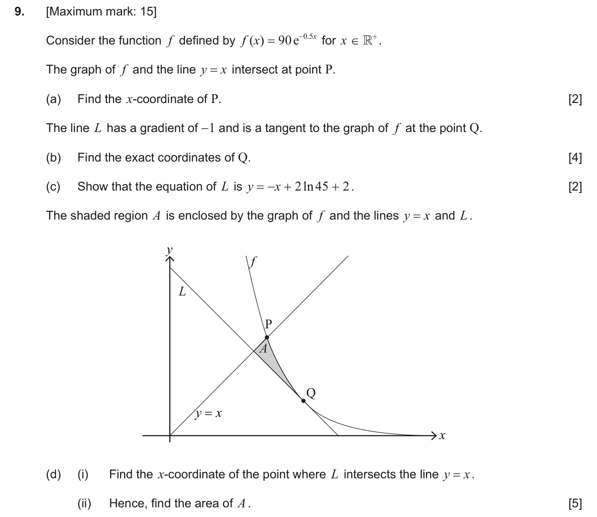
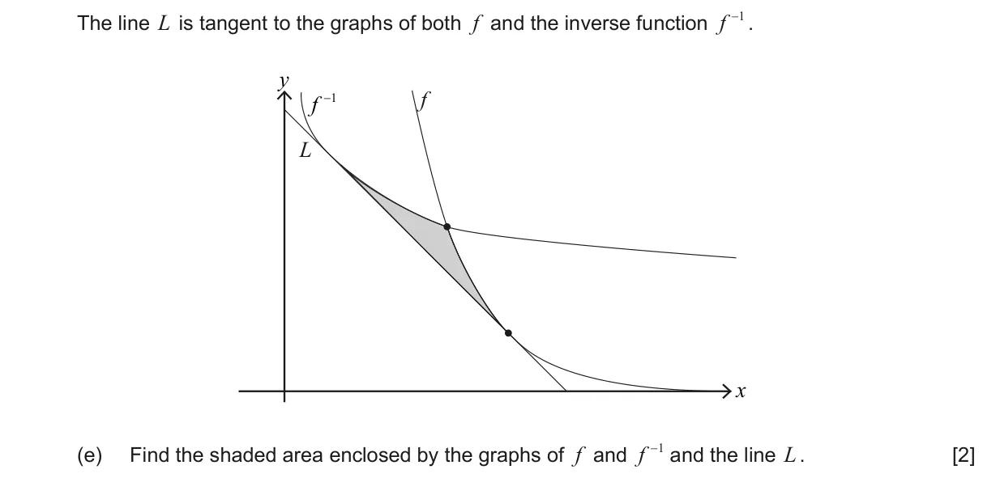
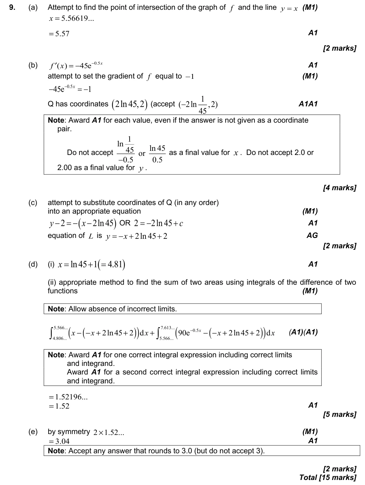

Appears in AA SL P2 Q9AA HL P2 Q10
5.11 Definite integrals, areas under curve onto x-axis and areas between curves5.4 Tangents and normals2.1 Equations of straight lines, parallel and perpendicular2.4 Key features of graphs5.6 Differentiating polynomials n in Q, chain, product and quotient rules1.7 Laws of exponents and logarithms2.2 Functions, notation, domain, range and inverse as reflection
Question


Markscheme
